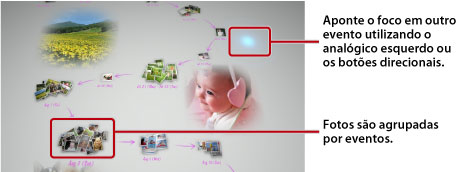

Visualizando fotos
Ao iniciar o Photo Gallery, todas as fotos que estão salvas no armazenamento do sistema do sistema PS3™ são automaticamente analisadas e agrupadas por eventos. As fotos são agrupadas em eventos com base na data e hora delas.
Selecionando eventos
Mova-se de foto em foto ou de evento em evento utilizando o controle esquerdo ou os botões de direção. Você pode selecionar diversas fotos ou eventos pressionando o botão  a cada seleção.
a cada seleção.

Alterando a maneira como as fotos são exibidas
Para alterar a maneira como as fotos são exibidas, selecione os grupos ou os eventos e, então, pressione o botão  . A exibição muda como mostrado nas imagens a seguir. Para voltar a uma exibição anterior, pressione o botão
. A exibição muda como mostrado nas imagens a seguir. Para voltar a uma exibição anterior, pressione o botão  .
.
Dica
Quando uma foto é exibida em tela cheia, você pode acessar o painel de controle na categoria  (Foto) na tela XMB™ pressionando o botão
(Foto) na tela XMB™ pressionando o botão  . Você pode, então, utilizar as opções disponíveis do painel de controle na foto exibida.
. Você pode, então, utilizar as opções disponíveis do painel de controle na foto exibida.
Vendo fotos como uma apresentação de slides
Para reproduzir uma apresentação de slides de suas fotos, selecione uma lista de reprodução ou um evento na [Área de biblioteca], pressione o botão e, então, selecione  (Apresentação de slides). Na tela exibida, selecione as opções da apresentação de slides descritas abaixo e, então, selecione [Início].
(Apresentação de slides). Na tela exibida, selecione as opções da apresentação de slides descritas abaixo e, então, selecione [Início].
| Estilo da apresentação de slides | Seleciona como as fotos serão exibidas na apresentação de slides. |
|---|---|
| Velocidade da apresentação de slides | Seleciona a velocidade da apresentação de slides. |
| Classificar | Seleciona a ordem das fotos. |
| Música da apresentação de slides | Seleciona a música que será reproduzida durante a apresentação de slides a partir do conteúdo musical fornecido com o aplicativo Photo Gallery. |
 |
Seleciona a música que será reproduzida durante a apresentação de slides na categoria  (Música) na tela XMB™. (Música) na tela XMB™. |
Dicas
- Durante uma apresentação de slides, você pode acessar o painel de controle da categoria (Foto) pressionando o botão . Você pode, então, utilizar as opções disponíveis do painel de controle na apresentação de slides.
- Quando as fotos forem exibidas na [Área de biblioteca], você poderá selecionar [Semelhança] em [Classificar] para ordenar as fotos com base na similaridade das imagens.
Alterando a música de fundo
Você pode alterar a música que é reproduzida enquanto visualiza suas fotos. Pressione o botão PS no controle sem fio para exibir a tela XMB™, vá para (Música) e, então, selecione o arquivo de música que deseja reproduzir.
Dicas
- Para alterar a música de fundo de uma apresentação de slides, selecione a música que deseja reproduzir antes de iniciar a apresentação de slides.
- Ao utilizar o Photo Gallery, se você selecionar uma faixa de música gravada em uma mídia de armazenamento como a música de fundo e iniciar a apresentação de slides, a faixa poderá não ser reproduzida novamente após o término da apresentação de slides.